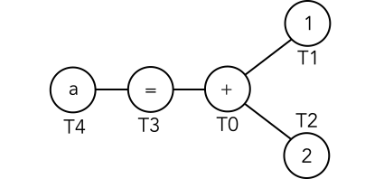
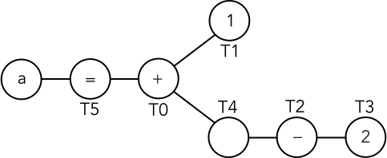

Exponential time complexity in the Swift type checker
This article will look issues surrounding a Swift compiler error that repeatedly forces me to rewrite my code:
error: expression was too complex to be solved in reasonable time; consider breaking up the expression into distinct sub-expressions
I’ll look at examples that trigger this error and talk about negative effects beyond compiler errors that are caused by the same underlying issue. I’ll look at why this occurs in the compiler and how you can work around the problem in the short term.
I’ll also present a theoretical change to the compiler that would eliminate all this problem permanently in most common cases [see section titled Update: Limitations] by altering the algorithm involved to be linear time complexity instead of exponential time complexity, without otherwise changing the external behavior.
Errors compiling otherwise valid code
The following line will give an error if you try to compile it in Swift 3:
let a: Double = -(1 + 2) + -(3 + 4) + -(5)This line is valid, unambiguous Swift syntax. This line should compile and ultimately optimize to a constant value.
But the line doesn’t get past the Swift type checker. Instead, it emits an error that the expression is too complex to solve. It doesn’t look complex, does it? It’s 5 integer literals, 4 addition operators, two negation operators and a binding to a Double type.
How can an expression containing just 12 entities be “too complex”?
There are many other expressions that will cause the same problem. Most include some literals, some of the basic arithmetic operators and possibly some heavily overloaded constructors. Each of the following expressions will fail with the same error:
let c = 1 * sqrt(2.0) * 3 * 4 * 5 * 6 * 7
let e: [(Double) -> String] = [
{ v in String(v + v) + "1" },
{ v in String(-v) } + "2",
{ v in String(Int(v)) + "3" }
]
let f: (Double) -> Double = { x in x * x * x * x + x * x * x * x }All of these are completely valid Swift syntax and the expected types for every term in every expression should be obvious to any Swift programmer but in each case, the Swift type checker fails.
Update: in Swift 3.1, the following two examples which I had previously included, above, were fixed and now work (although the first is a little slow).
let d = ["1" + "2"].reduce("3") { "4" + String($0) + String($1) }
let b = String(1) + String(2) + String(3) + String(4)Needlessly long compile times
Errors aren’t the only consequence of this problem. Try compiling the following line:
let g: Double = -(1 + 2) + -(3 + 4) + 5This single line does compile without error but it takes a whopping 20 seconds to compile in Swift 3.1 on my computer. The compiler spends almost all of this time in the Swift type checker.
Now, you probably don’t have many lines that take this long to compile but it’s virtually guaranteed that any non-trivial Swift project is taking at least a little longer than necessarily to compile due to the same complexity problem that causes the “expression was too complex to be solved in reasonable time” error.
Update: I had previously used the following example in this section but it got fixed in Swift 3.1 and now appears to run quite quickly:
let x = { String("\($0)" + "") + String("\($0)" + "") }(0)Unexpected behaviors
I want to highlight a quirk in the Swift type checker: the type checker will choose to resolve overloaded operators to non-generic overloads whenever possible. The code comments for the path that handles this specific behavior in the compiler note that this behavior exists as an optimization to avoid performance issues – the same performance issues responsible for the “expression was too complex” error.
To see what effects this has, let’s look at the following code:
let x = -(1)This code doesn’t compile. Instead, we get an error “Ambiguous use of operator ‘-’”.
This shouldn’t really be ambiguous; the compiler should realize we’re using a integer literal, treat the 1 as an Int and select the following overload from the standard library:
prefix public func -<T : SignedNumber>(x: T) -> THowever, Swift considers only the non-generic overloads; in this case, the Float, Double and Float80 implementations, all of which are equally imperfect (non-preferred creation from an integer literal). The compiler can’t choose one so it bails out with the error.
This particular optimization is applied only to operators, leading to the following inconsistency:
func f(_ x: Float) -> Float { return x }
func f<I: Integer>(_ x: I) -> I { return x }
let x = f(1)
prefix operator %% {}
prefix func %%(_ x: Float) -> Float { return x }
prefix func %%<I: Integer>(_ x: I) -> I { return x }
let y = %%1This code defines two function names (f and a custom operator prefix %%). Each of these function names has two overloads, (Float) -> Float and <I: Integer>(I) -> I.
Calling f(1) selects the <I: Integer>(I) -> I implementation and x is an Int. This is exactly what you’d expect.
Calling %%1 selects the (Float) -> Float implementation and y is a Float, contrary to expectations. The code has chosen to convert 1 to a Float, against the preference for Int – despite the fact that Int would also work – because the compiler bails out before it considers the generic overload of the function. It’s not really a semantically consistent choice, it’s the result of a compromise in the compiler to avoid the “expression was too complex to be solved” error and its associated performance problems.
Working around the problem in our code
In general, Swift’s complexity problem won’t be an issue unless you’re using two or more of the following features in a single expression:
- overloaded functions (including operators)
- literals
- closures without explicit types
- expressions where Swift’s default “every integer literal is an
Intand every float literal is aDouble” choice is wrong
If you don’t typically combine these features in your code, then you’re unlikely to see the “expression was too complex” error. However, if you are using these features, it isn’t always straightforward to suddenly stop. Mathematics code, large functional-style expressions and declarative code are easier to write with these features and often require a complete rethink to avoid them.
You may prefer to give the compiler a little nudge so that it will accept your code without major changes. There are a few different approaches that can help.
The compiler error suggests “breaking up the expression into distinct sub-expressions”:
let x_1: Double = -(1 + 2)
let x_2: Double = -(3 + 4)
let x: Double = x_1 + x_2 + -(5)Okay, technically that works but it’s really annoying – especially on small expressions where it only hurts legibility.
Another option is to reduce the number of function and operator overloads that the compiler must consider, by adding typecasts.
let x: Double = -(1 + 2) as Double + -(3 + 4) as Double + -(5) as DoubleThis will prevent (Float) -> Float or (Float80) -> Float80 being explored as one of the possible overloads for the negation operator, effectively reducing a system with 6 unknown functions to a system with just 4.
A note about this approach though: unlike other languages, Double(x) is not equivalent to x as Double in Swift. The constructor works more like another function and since it has multiple overloads on its parameter, it actually introduces another overloaded function into the search space (albeit at a different location in the expression). While the previous example will solve if you introduce Double around the parentheses (since the way the graph is rearranged favors the type checker), there are some cases where a similar approach can actually make things worse (see the String examples near the top of the article). Ultimately, the as operator is the only way to cast without inserting further complexity. Fortunately, as binds tighter than most binary operators so it can be used without parentheses in most cases.
Another approach is to use a uniquely named custom function:
let x: Double = myCustomDoubleNegation(1 + 2) + myCustomDoubleNegation(3 + 4)
+ myCustomDoubleNegation(5)This eliminates any need to resolve function overloads entirely since it has no overloads. However, it’s pretty ugly in this case where it presents a large amount of visual weight in an otherwise lightweight expression.
A final approach, is that in many cases you can replace free functions and operators with methods:
let x: Double = (1 + 2).negated() + (3 + 4).negated() + 5.negated()This works because methods normally have fewer overloads than the common arithmetic operators and type inference with the . operator is often narrower than via free functions.
Swift’s constraints system solver
The “expression was too complex” error is emitted by the “Sema” (semantic analysis) stage in the Swift compiler. Semantic analysis is responsible for resolving types in a system, ensuring that they all agree with each other and building a well-typed expression where all types are explicit.
More specifically, the error is triggered by the constraints system solver (CSSolver.cpp) within the semantic analysis stage. The constraints system is a graph of types and functions from a Swift expression and the edges in this graph are constraints between nodes. The constraints system solver processes the constraints from the constraints system graph until an explicit type or function is determined for each node.
All of that is really abstract so let’s look at a concrete example.
let a = 1 + 2The constraints system representation of this expression looks something like this:

The labels starting with “T” (for “type”) in the diagram come from the constraints system debug logging and they are used to represent types or function overloads that need to be resolved. In this graph, the nodes have the following constraints:
- T1 conforms to
ExpressibleByIntegerLiteral - T2 conforms to
ExpressibleByIntegerLiteral - T0 is a function that takes (T1, T2) and returns T3
- T0 is one of 28 implementations in the Swift standard library named
infix + - T3 is convertible to T4
NOTE: If you’re more familiar with Swift 2 terminology,
ExpressibleByIntegerLiteralwas previously namedIntegerLiteralConvertible.
To resolve this system, the constraints system solver starts with the “smallest disjunction”. Disjunctions are constraints that constrain a value to be “one of” a set (essentially, a logical OR). In this case, there’s exactly one disjunction: the T0 function overload in constraint 4. The solver picks the first implementation of infix + in its list: the infix + implementation with type signature (Int, Int) -> Int.
Since this is the only disjunction in the graph, the solver then resolves type constraints. Types T1, T2 and T3 are Int due to constraint 3. T4 is also Int due to constraint 5.
Since T1 and T2 are Int (which is the “preferred” match for an ExpressibleByIntegerLiteral), no other overloads to the infix + function are considered; the constraints system solver can ignore all other possibilities and use this as the solution. We have explicit types for all nodes and we know the selected overload for each function.
Getting more complex, quickly
Thus far, there’s nothing strange and you might not expect that Swift would start failing with expressions just a few times bigger. But let’s make just two changes: wrap the 2 in parentheses and apply a negation operator (prefix -) and add a type of Double for the result.
let a: Double = 1 + -(2)This gives a constraints system graph that looks like this:

with the constraints:
- T1 conforms to
ExpressibleByIntegerLiteral - T3 conforms to
ExpressibleByIntegerLiteral - T2 is a function that takes (T3) and returns T4
- T2 is one of 6 implementations in the Swift standard library named
prefix - - T0 is a function that takes (T1, T4) and returns T5
- T0 is one of 28 implementations in the Swift standard library named
infix + - T5 is convertible to
Double
Just 2 more constraints in the system. Let’s look at how the constraints system solver handles this example.
The first step to resolve this system is: choose the smallest disjunction. This time that’s constraint 4: “T2 is one of 6 implementations in the Swift standard library named prefix -”. The solver sets T2 to the overload with signature (Float) -> Float.
The next step is to apply the first step again: choose the next smallest disjunction. That’s constraint 6: “T0 is one of 28 implementations in the Swift standard library named infix +”. The solver sets T0 to the overload with signature (Int, Int) -> Int.
The final step is to use the type constraints to resolve all types.
However, there’s a problem: the first choice of (Float) -> Float for T2 and the choice of (Int, Int) -> Int for T0 don’t agree with each other so constraint 5 (“T0 is a function that takes (T1, T4) and returns T5”) fails. This solution is invalid and the solver must backtrack and try the next choice for T0.
Ultimately, the solver will go through all of the implementations of infix + and none will satisfy both constraint 5 and constraint 7 (“T5 is convertible to Double”).
So the constraints system solver will need to backtrack further and try the next overload for T2, (Double) -> Double. Eventually, this will find a solution in the overloads for T0.
However, since Double is not the preferred match for an ExpressibleByIntegerLiteral, the constraints system solver will need to backtrack and choose the next overload for T2 and run another full search through the possible values for T0.
There are 6 total possibilities for T2 but the final 3 implementations are rejected as an optimization (since they are generic implementations and will therefore never be preferred over the explicit Double solution).
This specific “optimization” in the constraints solver is the cause of the quirky overload selection behaviors I showed in the Unexpected behaviors section, above.
Despite this optimization, we’ve already gone from solving the constraints system with our first guess to needing 76 different guesses before reaching a solution. If we had another overloaded function to resolve, the number of guesses would get much, much bigger. For example, if we had another infix + operator in the expression, e.g. let a: Double = 0 + 1 + -(2), the search space would require 1,190 guesses.
Searching for the solution in this way is a clear case of exponential time complexity. The search space between the disjunction sets here is called a “Cartesian product” and for disjunctions in the graph, this algorithm will search an -dimensional Cartesian product (an exponential space).
In my testing, 6 disjunctions in a single expression is usually enough to exceed Swift’s “expression was too complex” limits.
Linearizing the constraints solver
A better solution, in the long term, is to fix the problem in the compiler.
The reason why the constraints system solver has an exponential time complexity for resolving function overloads is because (unless it can shortcut around the problem) Swift searches the entire -dimensional “Cartesian product” of all disjunction sets caused by function overloads in the graph to determine if one of the values is a solution.
To avoid the -dimensional Cartesian product, we need an approach where disjunctions are solved independently, rather than dependently.
Here is where I need to include a big warning:
UNPROVEN CLAIMS WARNING: The following is a theoretical discussion about how I would improve the resolution of function overloads in the Swift constraint system solver. I have not written a prototype to prove my claims. It remains possible that I’ve overlooked something that invalidates my reasoning.
Premise
We want to satisfy the following two goals:
- Constraints on a node should not depend upon, or reference, the result from other nodes.
- The disjunction from a preceeding function overload should be intersected with the disjunction from a succeeding function, flattening the two constraints to a single disjunction.
The first goal can be achieved by propagating constraints along the full path from their origins. Since Swift constraints are bidirectional, the constraint path for each node starts at all of the leaves of the expression, traverses via the trunk and then traverses back along a linear path to the node. By following this path, we can compose constraints that – instead referencing or depending upon types from other nodes – simply incorporate the same constraint logic as other nodes.
The second goal supports the first by reducing the propagated accumulation of constraints down to a single simple constraint. The most important intersection type for function overloads is an intersection of possible outputs from one overloaded function with possible input parameters of another overloaded function. This operation should be calculable by a type check of the intersecting parameter over a 2-dimensional Cartesian product. For other combinations of constraint intersection, a true mathematical intersection might be difficult but it’s not necessary to follow strict type rules, we need only reproduce the behavior of Swift’s type interference which often resorts to greedy type selection in complicated scenarios.
Re-solving the previous example
To see how these goals would be used in the constraints system solver, lets revisit the previous constraints graph:
let a: Double = 1 + -(2)and begin with the same set of constraints:
- T1 conforms to
ExpressibleByIntegerLiteral - T3 conforms to
ExpressibleByIntegerLiteral - T2 is a function that takes (T3) and returns T4
- T2 is one of 6 implementations in the Swift standard library named
prefix - - T0 is a function that takes (T1, T4) and returns T5
- T0 is one of 28 implementations in the Swift standard library named
infix + - T5 is convertible to
Double
Propagating constraints from right to left
We start by traversing from right to left (from the leaves of the expression tree down to the trunk).
Propagating the constraint on T3 to T2 adds the constraint “T2’s input must be convertible from a type that is ExpressibleByIntegerLiteral with Int preferred due to literal rules”. Intersecting this new constraint with the existing T2 constraints, discards the new constraint since all input parameters in T2’s existing possibility space already fulfill this new constraint and the preference of ExpressibleByIntegerLiteral for Int type on the input is overruled by the preference for specific operator overloads over generic operator overloads (which makes Double, Float or Float80 overloads of the prefix - function preferred). Propagating T2 to T4 adds the constraint “T4 must be one of the 6 types output from prefix -, with Double, Float or Float80 preferred”. Propagating T4 to T0 adds the constraint “T0’s second parameter must be convertible from one of the 6 types output from prefix -, with Double, Float or Float80 preferred”. Intersecting this with the constraints already on T0 leaves the constraint “T0 is one of 6 implementations in the Swift standard library named infix + where the right input is one of the types output from prefix -, with Double, Float or Float80 preferred”. Propagating T1 to T0 has no additional effect (since all choices in the existing constraint on T0 already fulfill this new constraint and the preference of ExpressibleByIntegerLiteral for Int type is cancelled out by the preference for Double, Float or Float80). Propagating T0 to T5 add the constraint “T5 is one of 6 values returned from the infix + operator where the second parameter is one of the types output from prefix -, with Double, Float or Float80 preferred”. Intersecting this with the constraint already on T5 leaves “T5 is Double”.
The half-propagated constraints are now:
- T1 conforms to
ExpressibleByIntegerLiteralwithIntpreferred due to literal rules - T3 conforms to
ExpressibleByIntegerLiteralwithIntpreferred due to literal rules - T2 is a function that takes (T3) and returns T4
- T2 is one of 6 implementations in the Swift standard library named
prefix -withDouble,FloatorFloat80preferred due to the preference for specific operator overloads over generic operator overloads - T4 must be one of the 6 types output from
prefix -, withDouble,FloatorFloat80preferred due to the preference for specific operator overloads over generic operator overloads - T0 is a function that takes (T1, T4) and returns T5
- T0 is one of the 6 implementations in the Swift standard library named
infix +where the second parameter is one of the 6 types output fromprefix -, withDouble,FloatandFloat80preferred due to the preference for specific operator overloads over generic operator overloads - T5 is
Double
Propagating constraints from left to right
Now we go left to right (from the trunk, up to the leaves).
Starting at the constraints on T5. Constraint 5 is “T5 is Double”. Propagating this to T0 creates a new constraint on T0 that its result must be convertible to Double. The intersection of this new constraint and the result of T0 immediately eliminates all possible overloads for the infix + operator except (Double, Double) -> Double. Propagating from T0 to T1, via the first parameter of this overload, creates a new constraint for T1 that it must convertible to Double. Intersecting this new constraint with the previous “T1 conforms to ExpressibleByIntegerLiteral” results in “T1 is Double”. Propagating from T0 to T4, via the second parameter of the selected infix + overload creates a new constraint for T4 that it must be convertible to Double. Intersecting this new constraint with the existing constraint on T4 results in “T4 is Double”. Propagating from T4 to T2 creates a new constraint on T2 that it must return a type that is convertible to Double. Intersecting this new constraint with the previous constraints on T2 immediately eliminates all overloads except (Double) -> Double. Propagating from T2 to T3 creates a new constraint for T3 that it must convertible to Double. Intersecting this new constraint with the previous “T3 conforms to ExpressibleByIntegerLiteral” results in “T3 is Double”.
The fully-propagated constraints are now:
- T1 is
Double - T3 is
Double - T2 is the
(Double) -> Doubleoverload ofprefix - - T0 is the
(Double, Double) -> Doubleoverload ofinfix + - T5 is
Double
And the constraints system is solved.
How would performance compare?
The purpose of my suggested algorithm is to improve the resolution of function overloads, so I’ll call the number of function overloads . I’ll use for the average number of overloads per function (the “disjunction” size).
As I previously stated, Swift’s algorithm solves this by searching an -dimensional Cartesian product of rank . This gives is an upper bound of which is an exponential time complexity.
My suggested algorithm resolves function overloads by searching separate 2-dimensional Cartesian products of rank . This gives is an execution time proportional to . Assuming is independent of (true when we can calculate the intersection between constraints, false otherwise), this makes the upper bound , linear time complexity.
Linear complexity will always beat exponential complexity for large values of but it’s important to know what constitutes “large” and what effect other factors might have for smaller values. In this case, 3 is already a “large” value. As I previously stated, Swift’s constraint system solver would require 1,190 guesses to solve the expression let a: Double = 0 + 1 + -(2). My suggested algorithm would require a search of just 336 possibilities and would have significantly lower overheads per possibility than Swift’s current approach.
I’m making an interesting assertion there: I’m claiming that my suggested algorithm would have lower overheads per possible solution. Let’s look at that in more detail for with our previous let a: Double = 1 + -(2) example. Theoretically, both Swift’s algorithm and my suggested algorithm will search the same 2-dimensional Cartesian product between prefix - and infix + – a space that contains 168 possible solutions.
Swift’s current algorithm searches just 76 possible entries out of a total possible 168 in the 2-dimensional Cartesian product space between the overloads of prefix - and infix +. But in doing so, Swift’s algorithm performs 567 calls to ConstraintSystem::matchTypes, of which 546 are related solely to function overload guesses. Swift performs a large number of type checks per guess.
My suggested algorithm would search the entire 168 possible entries in the 2-dimensional Cartesian product space (I haven’t included any shortcuts or optimizations at this point) but since it only checks the intersecting parameters at each search location (it doesn’t check unrelated type constraints), I estimate that it would require just 222 total calls to ConstraintSystem::matchTypes for the entire solution.
Determining performance for an unwritten algorithm involves a lot of guesswork, so it’s difficult to know with any degree of certainty, but it’s possible that my algorithm would perform equal or better for any value of .
Update: limitations
Thanks to Jordan Rose from the Swift team at Apple for prompting me to take a look at an article I hadn’t previously read looking at the worst-case complexity of overload resolution.
As I write this update in May 2017, this article is nearly a year old. Swift’s type checker has seen a number of special-case improvements (see the Swift 3.1 updates throughout this article) but the core hasn’t changed dramatically and it would still benefit from an approach that is linear…
…in most cases.
There are two particular conditions that can combine together to make the problem space truly exponential complexity in which case my suggestions for linearizing would have no benefit.
Conditions preventing linearization
It my be impossible to linearize the constraints solve if one or both of the following conditions are true:
- Overloaded functions exist such that knowing constraints on any input parameter or the return does not narrow the possible overloads in a way that you can apply constraints to other parameters or the return.
- Variables in otherwise unrelated branches of the expression tree are constrained to be the same type
Explanation of the first condition
An example of the first condition is a function with the following overloads:
X(F,F,F) -> FX(F,F,T) -> FX(F,T,F) -> TX(F,T,T) -> TX(T,F,F) -> TX(T,F,T) -> TX(T,T,F) -> FX(T,T,T) -> F
Independently knowing the type of any parameter or the return value for this function does not narrow the possible set of overloads enough for us to add new constraints to the other parameters or return value. Unless you know at least 2 parameters simultaneously, the remaining parameters are completely unconstrained.
Explanation of the second condition
The second point is a bit more complicated and I didn’t pay attention to the possibility in Swift until I read an article on a similar problem in C#: Lambda Expressions vs. Anonymous Methods, Part Five.
When you’re using closures, the closure parameters might not be fully resolved yet they have names which can be used at multiple points inside the closure. Using these unresolved names makes separate branches of the expression constrained to be type and yet forced to adhere to the constraints for each, separate location.
An example is:
let x = { t in /*...*/ }(manyOverloads())Any use of t in the closure must have the same type as every other use of t but that type is unknown (could be any of the return values from manyOverloads) so the selected overload to use for manyOverloads must adhere to every constraint at every separate location in the closure.
Consequences
When the first of these conditions is true, my brief pen-and-paper estimate is that the system may increase from linear complexity to logarithmic complexity; this isn’t a serious problem. When the second of these conditions is true, depending on the kinds of constraints involved, a linear solution might remain possible or the intersection of constraints could lead to quadratic complexity; bad but far from catastrophic.
When both of these conditions is true, the problem of choosing function overloads is equivalent to the Boolean Satisfiability Problem (SAT) and is at least as hard as 3-SAT. This means the problem is NP-Complete and all known solutions are exponential complexity.
So what does this mean?
Linearization should still be possible in a vast majority of cases. These two conditions are fairly uncommon – although not unknown. There are a handful of closures in this article that demonstrate the second condition. I don’t believe any of these closures would lead to an increase in complexity beyond linear (since they occur in situations of easy-to-intersect constraints) but it highlights that this condition does occur.
The first condition is actually the rarer of the two. I can’t personally think of a situation where a function with overloads like this might occur outside of mathematics functions that offer implicit type conversion (a pattern that is frowned upon in Swift). However, it’s worth keeping in mind how hard this kind of blindly overloaded function is on a constraints solver – definitely a design pattern to avoid.
Ultimately, the cases where this type of SAT complexity apply should be extremely rare and programmatically detectable. Once detected, you could even make this type of expression a compiler warning (it would be easy to design around or at least decorate the closure parameter types).
Conclusion
In my usage of Swift, the “expression was too complex to be solved in reasonable time” error is the most common error I see that isn’t a simple programmer error. If you write a lot of large functional-style expressions or mathematics code, you’ll likely see it on a regular basis.
The exponential time complexity in the Swift compiler’s constraints system solver can also lead to significant compilation time overhead. While I don’t have numbers on what percentage of typical Swift compilation times are spent in this part of the compiler, there are certainly degenerate cases where the majority of a long compilation time is spent in the constraints system solver.
The problem can be worked around in our own code but outside of cases that deliberately emulate the Boolean Satisfiability Problem, it shouldn’t be necessary. I’m fairly sure linear time evaluation is possible in a vast majority of cases that are currently problematic and I’ve laid out a way I think it could be done.
Parsing whitespace in an Xcode extension
Design patterns for safe timer usage